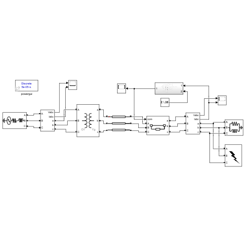

01 · Network modelling
Constructing a three-phase electrical power-system model with a transformer, transmission line, load and measurement points.
A three-phase electrical-network simulation exploring fault conditions, voltage and current behaviour, breaker operation, and protection relay logic. The companion MATLAB script provides visualisation and relay-timing comparison workflows.

The uploaded GA_PowerSystems.slx model contains a three-phase power source, transformer, distributed-parameters line, measurements, an electrical load, a three-phase fault element, a breaker and a protection subsystem. The protection subsystem includes RMS measurement blocks, comparison logic and flip-flops. These represent a conventional rule-based protection design rather than verified machine-learning functionality.
Constructing a three-phase electrical power-system model with a transformer, transmission line, load and measurement points.
Comparing normal operating conditions with three-phase (LLL) and line-to-ground (LG) fault scenarios described in the companion analysis script.
Examining RMS current measurements, threshold comparisons, latching logic and circuit-breaker operation.

This preview was extracted from the provided .slx file. It is not a newly simulated or independently verified test result.
| Script quantity | Value | Notes |
|---|---|---|
| Active and reactive load | 100 kW / 50 kVAr | Given as script parameter values |
| Fault onset marker | 0.100 s | Comment says to check against the actual fault block |
| Relay trip marker | 0.120 s | Comment says to read from relay scope |
| Breaker opening marker | 0.125 s | Comment says to read from current scope |
| Relay pickup assumption | 110% of script calculated load RMS | Illustrative assumption, not independently verified setting |
| Time multiplier setting | 0.1 | Script assumption to verify against Task 3 |
Numerical values above are documented in the uploaded MATLAB file. They are not certified measurement outcomes.
Normal_run.mat, LLL_run.mat and LG_run.mat. If those simulation exports are absent, it reconstructs illustrative traces using fixed parameters and assumptions. Such fallback plots must not be presented as genuine Simulink measurements. Those .mat files were not included in this portfolio upload. The script comments call the work “AI-Based”, but no trained AI model is identifiable in the supplied files.The project connects electrical-machine and network modelling with protection logic and visualisation. A key engineering lesson is that transient plots and relay comparisons only become reliable evidence when their source-data files, breaker conditions, actual model parameters and timing measurements are recorded together. This page documents the available academic work and distinguishes it from subsequent reconstruction or interpretation.
← Back to portfolio